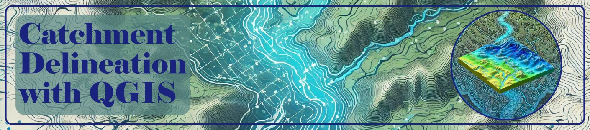

Catchment Delineation: A Step-by-Step Guide for Effective Water Resource Management
Understanding and managing water resources starts with analyzing catchments—the areas where rainfall collects and drains into a common outlet. In this blog, we break down the process of catchment delineation, a critical technique for hydrologists and environmental planners, using open-source tools like QGIS.
What is a Catchment?
A catchment, or watershed, is a land area where all surface runoff converges to a single point, such as a river or lake. It serves as the fundamental unit for hydrological studies, helping predict water availability, flood risks, and ecosystem health.
Tools You’ll Need
- QGIS: A free, open-source GIS software for spatial analysis.
- DEM Data: Digital Elevation Models (e.g., SRTM, ASTER GDEM) to map terrain.
- Plugins: SRTM-Downloader for fetching elevation data.
Step-by-Step Catchment Delineation Process
1. Acquire DEM Data
- Sources: Use global datasets like NASA’s 30m SRTM or JAXA’s ALOS World 3D.
- Download: Access tiles via dwtkns.com/srtm30m or QGIS plugins.
2. Preprocess DEM
- Merge Tiles: Combine multiple DEM tiles into a seamless raster (Raster → Miscellaneous → Merge).
- Reproject: Convert to a local coordinate system (e.g., UTM) for accurate area calculations (Raster → Projections → Warp).
- Fill Sinks: Correct depressions in the DEM to ensure proper flow modeling (SAGA Terrain Analysis → Fill).
3. Derive Hydrological Features
- Flow Direction: Calculate water movement using the D8 algorithm, which identifies the steepest downhill path for each cell.
- Flow Accumulation: Determine areas where water accumulates, forming streams. Apply thresholds (e.g., >3 cells) to define river networks.
- Strahler Stream Order: Classify streams hierarchically to prioritize major channels.
4. Define Outflow & Delineate Catchment
- Set Outlet: Mark the catchment’s drainage point on the stream network.
- Upslope Area: Use QGIS tools to automatically delineate the catchment boundary based on flow direction and accumulation.
5. Analyze & Visualize
- Calculate Metrics: Determine catchment area, perimeter, and stream length using QGIS’ Field Calculator.
- Stylize Maps: Apply colors, labels, and scales to create professional outputs for reports.
Why QGIS?
- Cost-Effective: Free and open-source.
- Cross-Platform: Works on Windows, macOS, and Linux.
- Community Support: Extensive tutorials and plugins.
Key Takeaways
- Catchment delineation is foundational for flood modeling, drought assessment, and land-use planning.
- Open-source tools like QGIS democratize access to advanced hydrological analysis.
- Proper DEM preprocessing ensures accurate results—don’t skip sink-filling or reprojection!
Ready to Start? Download QGIS, grab SRTM data, and follow the steps above to map your first catchment. For more resources, visit Dr. Ankit Deshmukh’s website or explore QGIS documentation.
#QGIS #DEM #SRTM #CatchmentDelineation